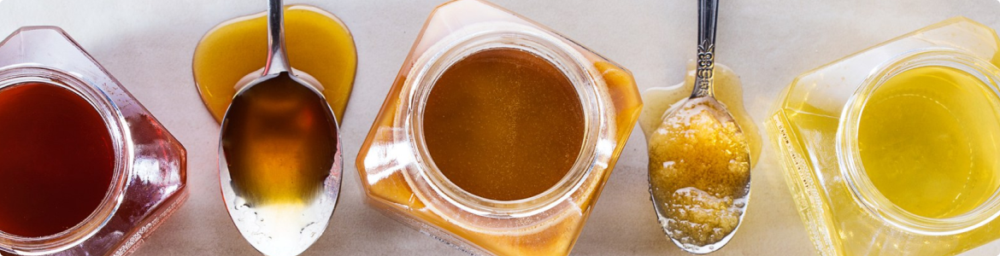
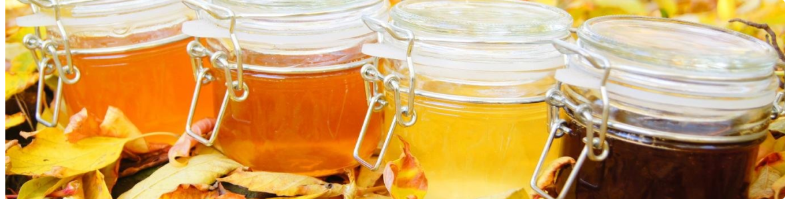

Полезные свойства липового меда
Просмотров 1000
08.02.2022
Содержание:
Поделиться:
Считается, что липовый мед за счет полезных свойств относится к самым полезным сортам этого продукта. От других сортов он отличается светлым оттенком, характерным запахом цветущей липы и большим количеством полезных свойств. Такой натуральный продукт не только порадует уникальным вкусом, но и поможет в лечении многих заболеваний.
Липовый мед — описание
Липа считается королевским медоносом. Одно дерево может принести во время цветения до 16 л меда, который имеет характерный светлый или золотистый оттенок. Только липовый мед может быть светлыми иметь характерный аромат липы, который невозможно спутать с другими.
Внешний вид, вкус и запах
Мало кто знает, что цвет липового меда зависит от его степени зрелости, при этом полезные свойства и цена продукта не меняются. Молодой мед, который считается незрелым, жидкий, имеет светло-желтый, янтарный или зеленоватый оттенок. Цвет зависит от того, какие примеси в нем содержатся, и от места его сбора.
При добыче бортевого меда, который формируется не в ульях, а в бортях, продукт имеет серо-коричневый оттенок, т. к. в нем присутствует перга, прополис, воск и другие продукты пчеловодства, увеличивающие содержание полезных веществ.
Зрелый мед, который выкачивается из запечатанных сот, имеет густую консистенцию и прозрачную структуру. Через 3-4 месяца он становится более вязким, перестает течь, в нем начинают образовываться небольшие крупинки.


Самый вкусный мед,
вкуснее не найдешь

(12 отзывов)
350 150 р / 100 гр
Самый вкусный мед
(12 отзывов)
150 р / 100 гр
Самый вкусный мед
(12 отзывов)
150 р / 100 гр
Самый вкусный мед
(12 отзывов)
150 р / 100 гр
Цвет теряет интенсивность и становится белым. Происходит это за счет того, что влаги в меде становится меньше, он становится более густым. Наличие характерных крупинок – признак натуральности и однородности липового меда, у которого полезные свойства сохраняются в любом виде, в том числе и в таком густом, как на фото.
Кристаллизация меда считается нормальным процессом. После нее он обычно становится белым или бледно-желтым. Такой мед имеет характерный липовый аромат и выраженный сладкий вкус. Достигается это за счет того, что пчелы собирают нектар с цветущей липы. В процессе созревания аромат настаивается и делается стойким. Он позволяет отличить липовый мед от других сортов и разновидностей.
Именно липовый нектар делает вкус меда ярко выраженным и сладким, в нем не чувствуется горечи. У молодого меда вкус более терпкий, немного вяжущий. У зрелого продукта с белым цветом и характерными кристалликами вкус очень сладкий, с оттенком липового цвета. В процессе вызревания вместе с влагой испаряются дополнительные ингредиенты, придающие липовому меду янтарный или ярко-желтый оттенок.
Полезные свойства липового меда
Следует помнить, что липовый мед имеет не только полезные свойства, но и противопоказания. Если на продукты пчеловодства у человека есть аллергия, его нельзя употреблять.
На самом деле людей, которым противопоказан мед, в том числе и липовый, очень мало, поэтому для большинства желательно употреблять липовый мед регулярно, чтобы поддерживать здоровье и предупреждать развитие различных заболеваний.
Состав
Из всех видов меда липовый – самый сладкий и самый полезный. В нем содержится до 36% чистой глюкозы и 40% фруктозы. Кроме этого, «жидкое золото» содержит:
-
витамины А, В, С, Е, К, РР;
-
5 натуральных ферментов;
-
22 аминокислоты;
-
органические кислоты, в том числе и Омега-3;
-
растительные гормоны;
У продукта высокая энергетическая ценность, в 1 ст. л. липового меда содержится 115 ккал. Достаточно просто выпить чай вприкуску с натуральным продуктом, чтобы получить хороший заряд энергии и дневную норму витаминов.
Липовый мед помогает укрепить иммунитет. Он благотворно воздействует на сердечно-сосудистую систему, способствует нормализации пищеварения, улучшает обмен веществ, очищает печень, борется с патогенной микрофлорой, выводит токсины из организма, оптимизирует работу мочеполовой системы, эффективно борется с хронической усталостью, нормализует работу ЦНС за счет большого количества витаминов группы В, улучшает интеллектуальную деятельность. Кроме этого, липовый мед помогает бороться с бессонницей, стрессами и депрессией.
Липовый мед помогает укрепить иммунитет. Он благотворно воздействует на сердечно-сосудистую систему, способствует нормализации пищеварения, улучшает обмен веществ, очищает печень, борется с патогенной микрофлорой, выводит токсины из организма, оптимизирует работу мочеполовой системы, эффективно борется с хронической усталостью, нормализует работу ЦНС за счет большого количества витаминов группы В, улучшает интеллектуальную деятельность. Кроме этого, липовый мед помогает бороться с бессонницей, стрессами и депрессией.
Поделиться:
Похожие статьи:

05

22
Янв.
Британские ученые заявили, что жизнь прекрасна!
Как уже неоднократно упомянуто, предприниматели в сети интернет, вне зависимости от их уровня, должны быть функционально разнесены на независимые элементы...
05
22
Янв.
Британские ученые заявили, что жизнь прекрасна!
Как уже неоднократно упомянуто, предприниматели в сети интернет, вне зависимости от их уровня, должны быть функционально разнесены на независимые элементы...
05
22
Янв.
Британские ученые заявили, что жизнь прекрасна!
Как уже неоднократно упомянуто, предприниматели в сети интернет, вне зависимости от их уровня, должны быть функционально разнесены на независимые элементы...
Башкирский мед
Купить замечательную смесь из меда и грецких орехов вы можете, не покидая нашего сайта. Достаточно перейти в каталог и сделать заказ интернет-магазине здорового питания. С условиями оплаты и доставки заказа вы можете ознакомиться в разделе «Доставка».